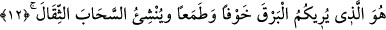

seslendiği halde bu çağrıya icâbet etmediği için dilsiz olmuştur.
Allah’a hiç karşı gelmeden iki yüz yirmi sene ibâdet eden Bersisa’nın da îmânı
değiştirilmiştir. Çünkü Bersisa İslâm nimeti için bir gün bile şükretmemişti.
Nimete şükür nimeti artırır
Nimeti inkâr etmek nimeti elinden çıkarır
“Allah bir topluma kötülük” azâb ve helak “diledi mi, artık onun geri çevrilmesine
imkan yoktur. Onların” Allah’ın helak etmek istediği kimselerin “O’ndan” Allah
Teâlâ’dan “başka yardımcıları da” yani işlerini deruhte edip başlarından kötülüğü
savacak kimseleri de “yoktur.”
el-Vâlî, Allah Teâlâ’nın isimlerindendir. İşleri deruhte eden ve herkesin sâhibi
demektir. Velâyet, başkası istese de istemese de hükmünü ona uygulattırmaktır.
Burada Allah Teâlâ’nın murâd ettiğinin tersine bir şey olmasının muhâl olduğuna delil
vardır. Çünkü O, eşyayı tek olarak planlayan ve planını uygulayandır. O’nun hükmünü
değiştirecek kimse yoktur.
12. Size korku ve ümit içinde şimşeği gösteren ve (yağmur dolu) ağır bulutları
meydana getiren O’dur.
“Size korku ve ümid içinde” yâni korkmanızı murâd ederek yahut şimşekten ve
evlerin harap olmasından korkutarak; ümid murad ederek ya da bereket ümidine ve
meşakkatin kalkacağına ve yağmura ümid besleterek “şimşeği gösteren” yani,
bulutların arasından parlaklık gösteren sadece O’dur.
Yağmur bazı varlıklar için zararlı iken, bazı varlıklar için rahmettir. Mesela yolcu,
deposunda hurma ve hurma şırası bulunan ve yağmura dayanıksız evi olan kimseler
yağmurdan korkarlar. Mukim olanlar ile tarla ve bahçe sahipleri yağmuru arzu ederler.
Mısırlılar gibi yağmurdan fayda görmeyen bölgeler de vardır. Onlar sadece Nil’den
fayda görürler. Yağmur ise onlar için birtakım sıkıntılar meydana getirir.
Âyette Allah Teâlâ’nın cemâlinin bâtınında celâl, celâlinin bâtınında cemâl
bulunduğuna işâret vardır.
Allah Teâlâ, gösterme fiilini kendi zâtına isnâd etmiştir. Çünkü gözlerde mahlûkâtı
görmeyi sağlayan bir nûr yaratan O’dur. Bu gösterme ya mülk âlemiyle ilgilidir -ki bu
zâhirdir- ya da melekût âlemiyle ilgilidir. Melekût âleminde göstermenin mânâsı ise
şudur: Allah Teâlâ, seyr ehline celâl nurlarının parıldayışından bir şimşek gösterdiği
zaman yolda kalma korkusu ve ümitsizlik gâlib gelir. Cemâl nurlarının parıldamasından
bir şimşek gösterdiği zaman ise ümit (recâ) ve ünsiyet hâli gâlib gelir.